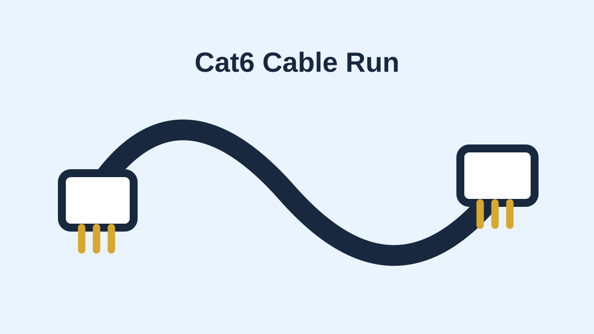

Broadcast
FoMaKo 4K Producer Bundle
Auto-tracking 4K camera and production control bundle for improving the church livestream and recorded ministry content.
Quantity: 1 Subtotal: $1,519.00
View source linkThis project strengthens the corps’ online ministry by improving the quality, clarity, and reliability of worship livestreams and recorded ministry content. The upgraded camera bundle will help the church better serve homebound members, families who cannot attend in person, and first-time online guests exploring the ministry before visiting.
The church already uses online ministry to extend worship, teaching, and connection beyond Sunday morning. This request provides an auto-tracking 4K production bundle and Cat6 cable needed for a cleaner, more flexible broadcast setup. The goal is to make the livestream easier to follow, less dependent on constant manual camera operation, and more useful for worship services, Bible teaching, and special events.
Improved livestream quality helps homebound members, traveling families, and online guests remain connected to worship and teaching.
A better camera and production workflow creates a more stable, readable, and engaging online presentation.
Auto-tracking camera support reduces the need for constant hands-on camera control during services and special programs.
Auto-tracking 4K camera and production control bundle for improving the church livestream and recorded ministry content.
Quantity: 1 Subtotal: $1,519.00
View source link
Network cable for connecting the broadcast equipment and allowing a cleaner installation path for the camera setup.
Quantity: 1 Subtotal: $56.99
View source linkItem/Project Requested: Church Broadcast Equipment Upgrade
Description: Purchase an auto-tracking 4K camera production bundle and supporting Cat6 cable to improve the quality and reliability of the church’s livestream and recorded ministry content. This equipment will support Sunday worship, Bible teaching, special services, and online outreach by making the video clearer, easier to follow, and less dependent on constant manual camera control. The upgrade will help the corps connect with homebound members, families unable to attend in person, and new viewers who first encounter the ministry online.